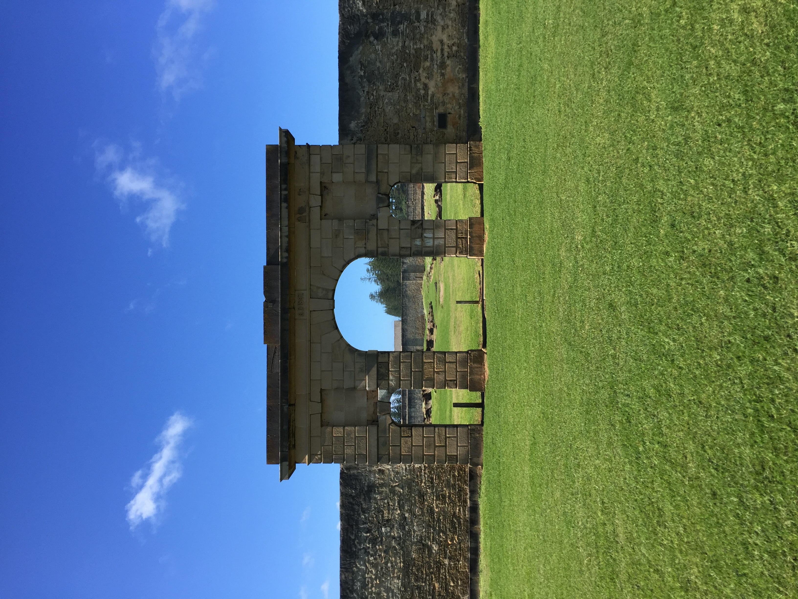

About the Norfolk Island
 Kingston and Arthurs Vale Historic Area (KAVHA) is situated on the southern side of Norfolk Island fronting Slaughter Bay. Referred to as KAVHA it is a cultural landscape which includes an agrarian landscape (Arthurs Vale, Watermill valley and the northern hillsides) and the settled coastal plain at Kingston. Hills to the north and west fringe the settlement on the coastal plain. Roads provide ways through KAVHA, linking the groups of structures, access to the landing place, the foreshore, the cemetery and bridges. The Kingston plain is Norfolk’s only coastal plain area with beach, dune and a coral edged lagoon.
The convict barracks and gaol were located on the foreshore. Swampy land separated the convict accommodation from the military and civil accommodation arranged on the inland side of the coastal flat while a succession of Government houses were positioned in commanding locations. The many surviving buildings at the site reflect these arrangements.